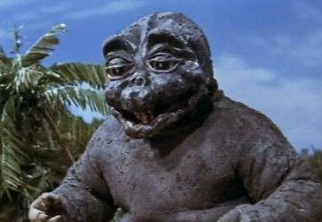

Godzilla is a monster originating from a series of tokusatsu films of the same name from Japan. The character first appeared in Ishirō Honda's 1954 film Godzilla and become a worldwide pop culture icon, appearing in media including 29 films produced by Toho, three Hollywood films, and numerous video games, novels, comic books, television shows. It is often dubbed the "King of the Monsters", a phrase first used in Godzilla, King of the Monsters!, the Americanized version of the original film.
Godzilla is depicted as an enormous, destructive, prehistoric sea monster awakened and empowered by nuclear radiation. With the nuclear bombings of Hiroshima and Nagasaki and the Lucky Dragon 5 incident still fresh in the Japanese consciousness, Godzilla was conceived as a metaphor for nuclear weapons. As the film series expanded, some stories took on less serious undertones, portraying Godzilla as an antihero, or a lesser threat who defends humanity. With the end of the Cold War, several post-1984 Godzilla films shifted the character's portrayal to themes including Japan's forgetfulness over its imperial past, natural disasters, and the human condition.

Godzilla has been featured alongside many supporting characters. It has faced human opponents such as the Japan Self-Defense Forces (JSDF), or other monsters, including King Ghidorah, Gigan and Mechagodzilla. Godzilla sometimes has allies, such as Mothra, Rodan and Anguirus, and offspring, such as Minilla and Godzilla Junior. Godzilla also fought RKO's King Kong.
Godzilla has also been featured in other media such as Marvel Comics series in 1977 and Dark Horse series in 1995.